Asian Independent Film Festival Review
スピード、近道、そして即時の満足感に囚われた時代に、この映画は瞑想のように感じられる。
― 中略 ―
まるで時の流れがゆっくりと進み、世界がデジタルの鼓動ではなく、人間の鼓動に再び同期していくかのような感覚に襲われる。
Asian Independent Film Festival Review
Official Review →
Official Review →

人・自然・地球——。
すべてのもののあり方を考える。
石おのと一本の巨木から始まった、2年以上にわたる丸木舟づくりの記録。
「みんなが笑顔で乗れる舟を作ろう」
——縄文大工・雨宮国広が挑んだのは、石おのだけで樹齢250年の杉から巨大な丸木舟を生み出すこと。
丸木舟を作る為に頂く命は樹齢250年の杉。
モノが溢れる時代に、敢えて原始に還り行動する意味とは。そこまでして頂く命に向き合う心とは。
祖先が辿ったであろう世界を現代に蘇らせることで、初めて感じることができる、人類が忘れてしまった「何か」。
そんな「Jomonさんがやってきた！プロジェクト」を2年以上に渡り追いかけるドキュメント映画。
スピード、近道、そして即時の満足感に囚われた時代に、この映画は瞑想のように感じられる。
― 中略 ―
まるで時の流れがゆっくりと進み、世界がデジタルの鼓動ではなく、人間の鼓動に再び同期していくかのような感覚に襲われる。
原始の道具を辿れば、現代人の失った物が見えて来るかも知れない。
人間本来の生き方はここにあると確信してしまう程。
本当に素晴らしい作品です!
内容は、、素晴らしい！ものだった。
疲弊した地球環境、行き詰まった文明の中で、確かな手応えを感じるメッセージが、我が胸を突き抜けるのを感じた。
命との向き合い方、とても考えさせられるものがありました。
木が倒れるまで、船ができるまで、そしてこれから250年の先まで。
全てにドラマがあります。
この大量生産大量消費の時代だからこそ、向き合うべき内容です。
日本一周しながら沿岸ゴミを拾い続ける丸木舟『ミンナ』。無謀で果てしないように思える航海は何故始まったのか。そしてこの丸木舟はどのように生まれたのか。
それは勢いや思いつきではない、果てしない試行錯誤の上で歩み続けた日々があったから。彼らがなぜこんなことをしているのか、この映画はその理由の「オリジン」をもう一度辿りなおすために存在します。
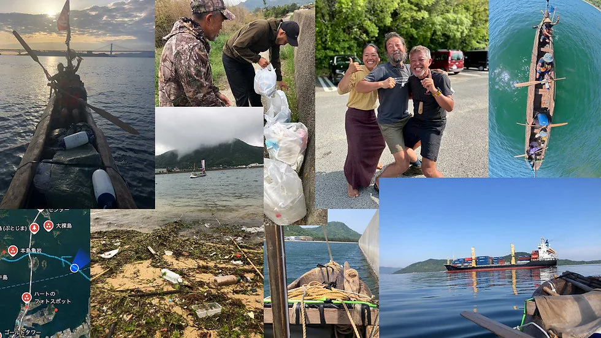
本作の上映会を、誰でも主催者になれるサービス・cinemoで募集中！ご希望の方はcinemoサイトよりお申込みください。
cinemoは社会問題解決に向けた映画配給を行うユナイテッドピープル株式会社が運営しています。
監督自ら、映画上映後のトークイベントを行うことができます。
Jomonさんが願うこと、撮影中に起きたこと、映画に込めた思い、お客様とのコミュニケーション等、様々なご要望に応えます。対談・独演など、ご希望のスタイルでお話します。
実際に作成した石おのや杉の実物をお持ちして、映画の世界をより実感頂けます（杉の実物は壊れやすいため、車で運搬・移動できる範囲に限らせていただきます）。
世界各地の映画祭にて受賞・公式選出されました。
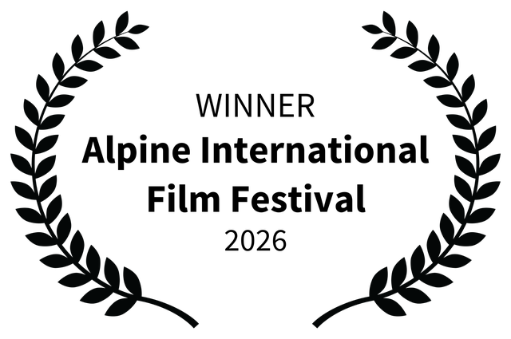
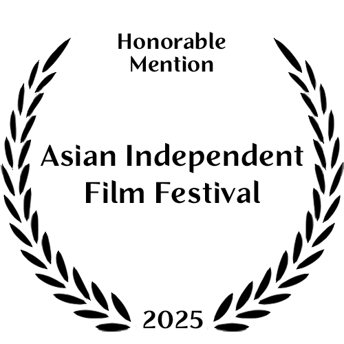
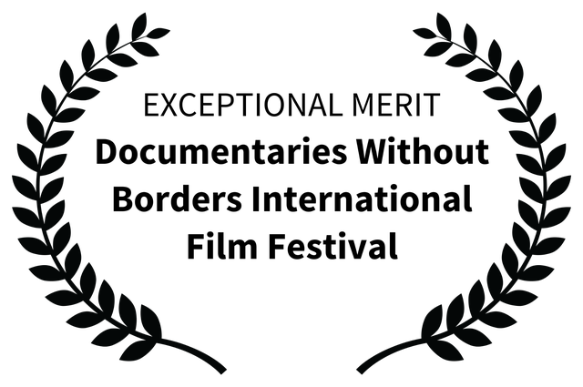
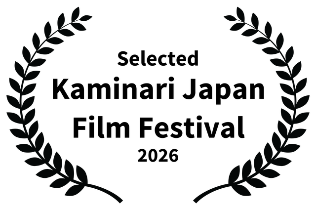
Blu-ray・DVD・パンフレットはTiny Mouse Factoryのオンラインストアで販売しています。
オンライン配信については現在準備中です。今しばらくお待ちください。
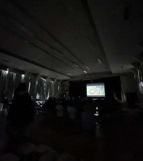
廃校での上映会
愛知県東栄町
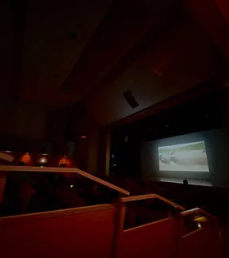
大ホールでの上映会
岡山県瀬戸内市
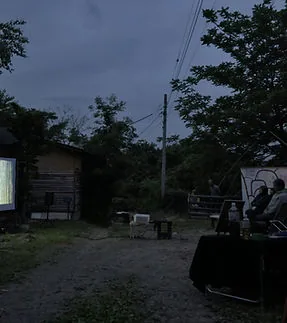
屋外上映会
山梨県甲州市
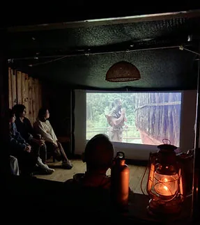
小屋での上映会
山梨県甲州市
原始の知恵と道具を用いて、全国の子供たちと一緒に日本を一周するための巨大な丸木舟を作ろう、というプロジェクト。
Part1・杉の木を伐る、Part2・全国を回って皆で丸木舟を作る、Part3・丸木舟に乗るという全3部構成で2021年から開始。
参加する子供たちは自らの手で石おのを作り、巨大な杉の木と向き合う中で様々なことを考え、感じることをテーマに掲げ、活動する。
プロジェクトの原資はクラウドファンディングで集められている。
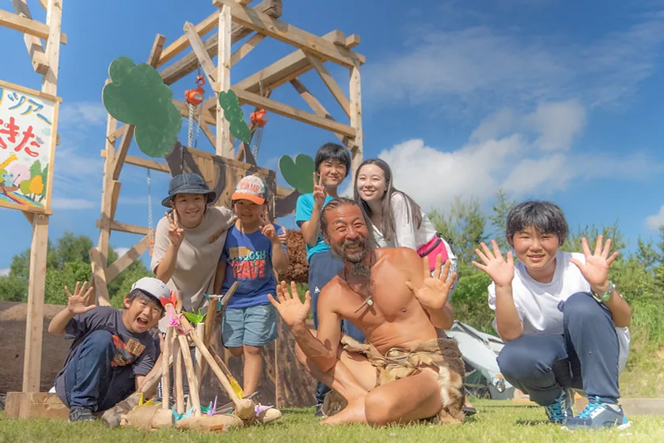
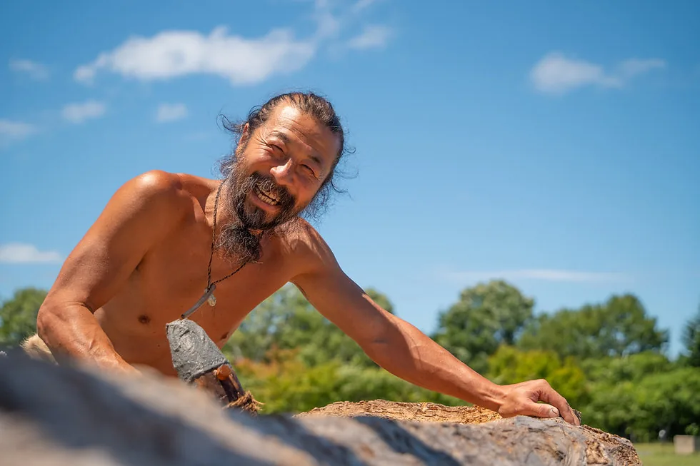
1969年、山梨県生まれ。丸太の皮むきのバイトをきっかけに大工の道へ。
ログハウスビルダー→大工→二級建築士→宮大工と歩み、古民家や社寺文化財の修復等、手道具での伝統的な手法に傾倒する中、2009年に石おのと出会い、その素晴らしさに気づく。
石川県・真脇遺跡にて石おの等を用いた縄文住居の復元、国立科学博物館での考古学実験「3万年前の航海 徹底再現プロジェクト」においては、伐採から石おのを使用して外洋航海用丸木舟を製作。手道具のみで自作した「縄文小屋」と呼ぶ小屋に暮らす。
2025年、（公財）やまなし環境財団より、優れた環境保全活動を行っているとして「若宮賞」を受賞。
現在は丸木舟で日本全国の海を沿岸のゴミ清掃をしながら漕ぎ回っている。纏う衣装はロードキル被害で命を落とした生き物たちの忘れ形見。
1981年、兵庫県生まれ。21歳の時、作曲家になると言いだし、大学中退。27歳で編曲家としてスタート。
作曲、音楽学校講師等を経て、31歳で写真・映像撮影も業務として開始。規模は小さくても作れるものがある、との思いから、屋号をTiny Mouse Factoryと名付ける。
2019年「3万年前の航海 徹底再現プロジェクト」では映画・VRコンテンツ・TV番組の撮影クルーとして同行。ここでJomonさんと出会う。
主な業務は国立公園や自治体PV、企業用映像、MV等の撮影、編集。全国を動き回る傍ら、BGM制作等も並行して行っている。
自らが出演するポッドキャスト「にしやま・メロンの創作休憩室」配信中。
250music、および各社サブスクリプションサービスで配信中。
皆様の応援で達成致しました。
ご協力いただき誠にありがとうございます。
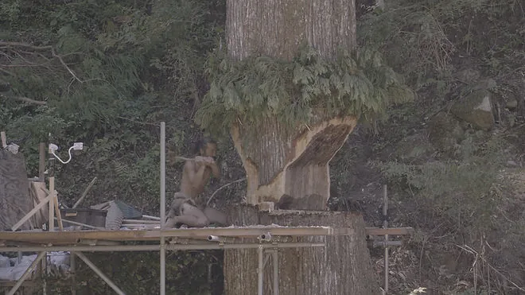
上映会、監督トーク・講演、取材、作品に関するお問い合わせはTiny Mouse FactoryのCONTACTフォームよりご連絡ください。
監督のコメント
電動工具も鉄製道具も使わないで、「石おの」だけで丸木舟を作る映画。
この映画を何度も観ていると、ふと「これは歩いて廻るお遍路さんのようだ」と思うようになりました。電車も自動車もバスも自転車も使わない。何なら住んでいる場所から一番札所まですら歩いていくような感覚。
文明の利器をフル活用すれば、お遍路さんはたぶん1週間もかからず終えられるでしょう。歩いたら何か月、いや年単位でかかるかもしれません。それを敢えてやる意味…
それは、「遅いからこそ見える世界がある」ということなんじゃないでしょうか。歩みの鈍いカメだからこそ見える世界。足元の草花を眺め、遠くの山が少しずつ近づいてきて、その向こうに青い海が見え、町の人々と話し、時に立ち止まって振り返る。あっという間に通り過ぎては出会うことのない世界。それをじっくり噛みしめながら、ゆっくりでもよいという気持ちで歩く。
「早ければ早いほど良い」「楽ができるなら楽がしたい」というのは、人の性のひとつでしょう。僕もそうです。でももし、「ゆっくりでもよい」と自分で自分を解放することができたなら、きっと全く違う気付きと哲学が心に浮かぶことでしょう。
名前がイメージとして強すぎるので誤解されがちですが（笑）、彼は決して考古学的に正確な縄文人／文化を追及・模倣するわけでもなく、ファッションとして原始人をやっているわけでもありません。ただ現代において、石おのの「歩みの遅い素晴らしさ」に気付いただけなんです。
縄文大工・雨宮国広はチェーンソーを扱うログハウスビルダーからキャリアをスタートし、鉄の手道具（手斧、鉞など）を経由して石おのにたどり着きました。そう、彼はしっかり現代の利器の持つ力を知っている「現代人の職人」なのです。それがゆえに彼は現代社会と自分の理想のギャップに苦しむ毎日を何年も何年も送ることになります。
しっかり彼自身の足で歩んだからこそ見えた「彼の思う世界」と「現代社会」とのズレを、一体どうすればいいのかと悩み、そしてこんなとんでもなく巨大なプロジェクトを、最初は一人で実行したわけです。それがこの「Jomonさんがやってきた！プロジェクト」です。
Jomonさんは映像としてプロジェクトの様子を残し、たくさんの方に命と人と地球のかかわり方を考えてもらうために、数多くの大手映像制作会社に企画を持ち込んだそうですが、全て断られてしまったそうです。2年以上に及ぶプロジェクトを映像で記録し、映像作品として完成させるということは、制作予算も巨大になります。制作会社も、やりたくても実行できなかったのかもしれません。
僕ならなんとかできるかもしれないと思いました。大きな会社にできないなら、ちっぽけな個人事業主の出番だ、と。とりあえず機材と自分の身ひとつがあれば、なんとかなるだろう、と思ったわけです。気合で何とか出来るだろう、と。
まずは自費で撮れるだけ撮って、記録できるだけ記録してみよう、と。例え場当たり的だと言われようと、無理に決まっていると言われても、なんとか続けて行こうと。相手は命あるもの。撮れずに通り過ぎてしまった時間はもう取り戻せないからです。
制作決定から日数を経る毎に、僕一人の力がどれだけ微弱でひ弱なものか、よくわかりました。どれだけ支えてもらったのか、数え切れないほどの救いと助けが奇跡のように起きたのです。
そう、僕もいつの間にか遅い遅い速度で、たくさんの人に背中を押してもらいながら、ゆっくりと歩き続けることができました。何度も「だめかもしれない」と思いました。悲しくなる日もありました。でも「やめたい」とは思いませんでした。「後押し」とは本当に強い力なんです。初めて知ることができました。
何とか最後まで撮り切って、皆さんのところへお届けできることになりました。何度も頓挫する可能性のあった、個人の手に負えないとても大きなプロジェクトを映画としてお届けできる。これはたくさんの方々の力が成しえた奇跡なんです。
これは本当にみんなで作った「みんなのふね」なのです。
みんな、やったぜー！
監督 にしやまゆうき